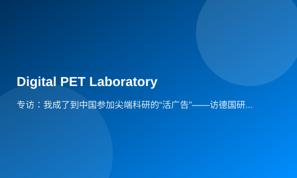

专访：我成了到中国参加尖端科研的“活广告”——访德国研究生尼古拉·米勒
新华社德国吕塞尔斯海姆３月１７日电专访：我成了到中国参加尖端科研的“活广告”——访德国研究生尼古拉·米勒
新华社记者张毅荣
“我现在成了学校的‘活广告’，校方和我都希望有更多同学选择到中国参与国际尖端科技研究。”德国硕士研究生尼古拉·米勒在接受新华社记者采访时笑着说。
近日，德国莱茵美因应用科学大学应用物理专业硕士生米勒的一封“推荐信”登上了学校官网首页。他撰文介绍了自己去年９月起在中国华中科技大学数字ＰＥＴ（正电子发射断层成像）实验室３个月的交流实习经历，并“强烈推荐”其他同学报名参加。文章还配有他在中国长城等地拍摄的照片。
米勒写道，通过这次实习，“无论是在专业领域还是个人生活方面，我都学到很多，也对未来的生活和职业发展有了全新视野”。
他告诉记者，他最近正在准备硕士毕业论文，论文题目是“利用全数字硅光电倍增管开发血氧饱和度监测环”。“简单说，就是用我掌握的工程技术知识，为开发一款能够测量血液中含氧量的指环提供方案。这正是我在华中科技大学数字ＰＥＴ实验室参与研究的项目。”
米勒介绍，这款高科技多功能指环将具有很强的医学临床应用价值，包括用于对阿尔茨海默病进行早期诊断。“中国团队的相关科研技术属于世界顶尖。这也是当初吸引我报名参加的主要原因。”
回顾在中国的实习经历，米勒感叹道：“时间不长，但强度巨大。中国导师和研究伙伴对项目的刻苦投入程度给我留下了极其深刻的印象。感觉他们真是全身心投入科研。身在其中，我也不自觉地深受感染。”
走在莱茵美因应用科学大学的教学楼里，米勒告诉记者，与在德国不同，中国教授的办公室几乎随时开放。“遇到任何问题，都能前去寻求帮助，也总会得到亲切热情的指导，”他说，“哪怕现在回到德国，我还是能通过微信，随时与在中国的导师保持联系。”
除学业外，米勒还不忘到中国各地走走看看。“去年１２月中旬实习结束后，我专门利用一个月的时间，去了西安、北京、上海、香港、海南……大多数时候都是搭乘高铁。旅途中，你能时刻感受到中国的广袤和飞速发展。”米勒说。
谈到未来规划，米勒告诉记者，他正考虑进一步在数字ＰＥＴ技术领域深造。“去年华中科技大学数字ＰＥＴ实验室和意大利一个脑科学研究中心合作，在意大利建立了海外研究中心。我希望能继续留在研究团队，将来在中、意、德多地参与项目，争取获得博士学位。”
米勒说：“为了以后能更好地工作和生活，我还准备学习中文。学点中文，这也是我给打算去中国交流实习的同学们的建议。”（完）